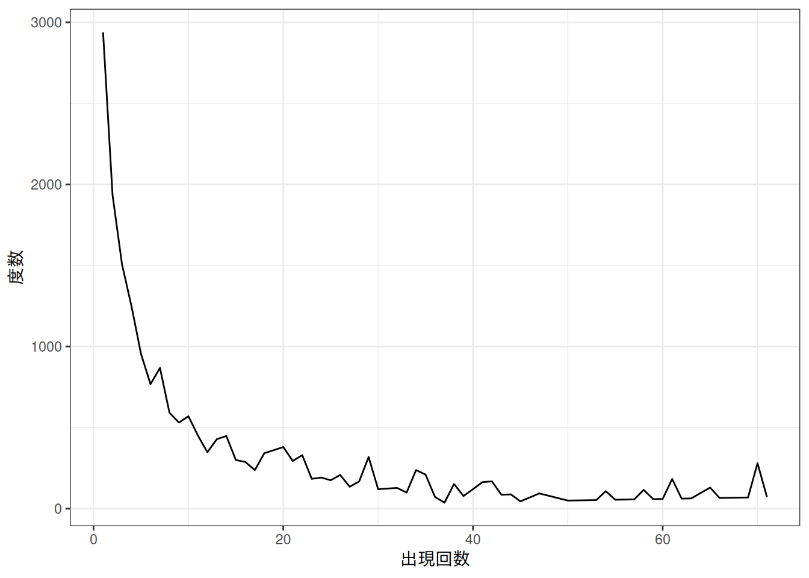
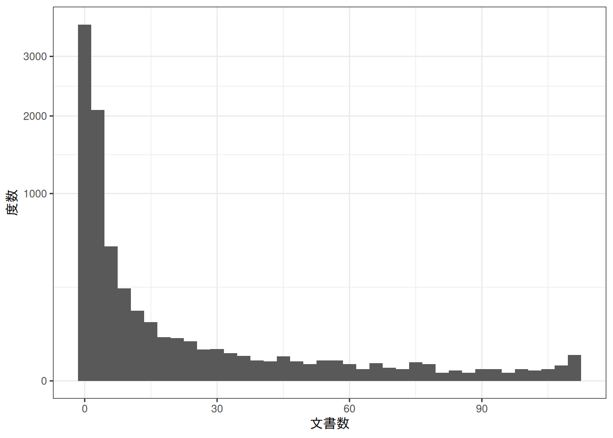
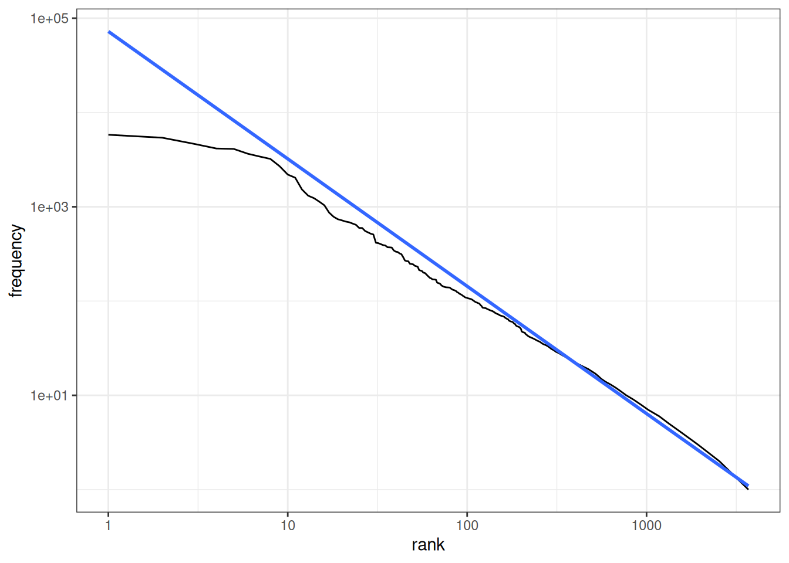
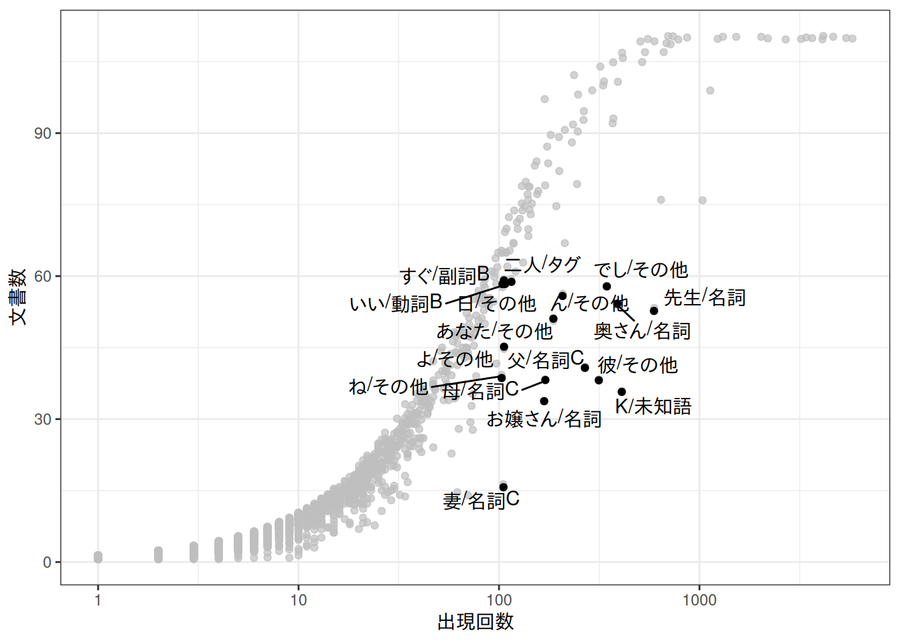

suppressPackageStartupMessages({
library(ggplot2)
library(duckdb)
})
drv <- duckdb::duckdb()
con <- duckdb::dbConnect(drv, dbdir = "tutorial_jp/kokoro.duckdb", read_only = TRUE)
tbl <-
readxl::read_xls("tutorial_jp/kokoro.xls",
col_names = c("text", "section", "chapter", "label"),
skip = 1
) |>
dplyr::mutate(
doc_id = factor(dplyr::row_number()),
dplyr::across(where(is.character), ~ audubon::strj_normalize(.))
) |>
dplyr::filter(!gibasa::is_blank(text)) |>
dplyr::relocate(doc_id, text, section, label, chapter)Appendix B — 抽出語メニュー1
B.1 抽出語リスト（A.5.1）
活用語をクリックするとそれぞれの活用の出現頻度も見れるUIについては、Rだとどうすれば実現できるかわからないです……。
dat <- dplyr::tbl(con, "tokens") |>
dplyr::filter(
!pos %in% c("その他", "名詞B", "動詞B", "形容詞B", "副詞B", "否定助動詞", "形容詞（非自立）")
) |>
dplyr::count(token, pos) |>
dplyr::filter(n >= 100) |>
dplyr::collect()
reactable::reactable(
dat,
filterable = TRUE,
defaultColDef = reactable::colDef(
cell = reactablefmtr::data_bars(dat, text_position = "outside-base")
)
)B.2 出現回数の分布（A.5.2）
B.2.1 度数分布表
dat <-
dplyr::tbl(con, "tokens") |>
dplyr::filter(
!pos %in% c("その他", "名詞B", "動詞B", "形容詞B", "副詞B", "否定助動詞", "形容詞（非自立）")
) |>
dplyr::count(token, pos) |>
dplyr::summarise(
degree = sum(n, na.rm = TRUE),
.by = n
) |>
dplyr::mutate(
prop = degree / sum(degree, na.rm = TRUE)
) |>
dplyr::arrange(n) |>
dplyr::compute() |>
dplyr::mutate(
cum_degree = cumsum(degree),
cum_prop = cumsum(prop)
) |>
dplyr::collect()
dat
#> # A tibble: 98 × 5
#> n degree prop cum_degree cum_prop
#> <dbl> <dbl> <dbl> <dbl> <dbl>
#> 1 1 2938 0.111 2938 0.111
#> 2 2 1934 0.0729 4872 0.184
#> 3 3 1506 0.0568 6378 0.240
#> 4 4 1248 0.0470 7626 0.287
#> 5 5 955 0.0360 8581 0.323
#> 6 6 768 0.0289 9349 0.352
#> 7 7 868 0.0327 10217 0.385
#> 8 8 592 0.0223 10809 0.407
#> 9 9 531 0.0200 11340 0.427
#> 10 10 570 0.0215 11910 0.449
#> # ℹ 88 more rowsB.2.2 折れ線グラフ
dat |>
dplyr::filter(cum_prop < .8) |>
ggplot(aes(x = n, y = degree)) +
geom_line() +
theme_bw() +
labs(x = "出現回数", y = "度数")
B.3 文書数の分布（A.5.3）
B.3.1 ヒストグラム🍳
段落（doc_id）ではなく、章ラベル（label）でグルーピングして集計しています。docfreqについて上でやったのと同様に処理すれば度数分布表にできます。
dat <-
dplyr::tbl(con, "tokens") |>
dplyr::mutate(token = paste(token, pos, sep = "/")) |>
dplyr::count(label, token) |>
dplyr::collect() |>
tidytext::cast_dfm(label, token, n) |>
quanteda.textstats::textstat_frequency() |>
dplyr::as_tibble()
dat
#> # A tibble: 7,140 × 5
#> feature frequency rank docfreq group
#> <chr> <dbl> <dbl> <dbl> <chr>
#> 1 の/その他 5801 1 110 all
#> 2 た/その他 5396 2 110 all
#> 3 。/その他 4648 3 110 all
#> 4 は/その他 4148 4 110 all
#> 5 に/その他 4104 5 110 all
#> 6 、/その他 3646 6 110 all
#> 7 て/その他 3403 7 110 all
#> 8 を/その他 3216 8 110 all
#> 9 私/その他 2694 9 110 all
#> 10 が/その他 2194 10 110 all
#> # ℹ 7,130 more rows度数分布をグラフで確認したいだけなら、このかたちからヒストグラムを描いたほうが楽です。
dat |>
ggplot(aes(x = docfreq)) +
geom_histogram(binwidth = 3) +
scale_y_sqrt() +
theme_bw() +
labs(x = "文書数", y = "度数")
B.3.2 Zipf’s law🍳
よく見かけるようなグラフです。言語処理100本ノック 2020の39はこれにあたります。
dat |>
ggplot(aes(x = rank, y = frequency)) +
geom_line() +
geom_smooth(method = lm, formula = y ~ x, se = FALSE) +
scale_x_log10() +
scale_y_log10() +
theme_bw()
B.4 出現回数・文書数のプロット（A.5.4）
図 A.25のようなグラフの例です。ggplot2でgraphics::identify()のようなことをするやり方がわからなかったので、適当に条件を指定してgghighlightでハイライトしています。
dat |>
ggplot(aes(x = frequency, y = docfreq)) +
geom_jitter() +
gghighlight::gghighlight(
frequency > 100 & docfreq < 60
) +
ggrepel::geom_text_repel(aes(label = feature)) +
scale_x_log10() +
theme_bw() +
labs(x = "出現回数", y = "文書数")
B.5 KWIC（A.5.5）
B.5.1 コンコーダンス
コンコーダンスはquanteda::kwic()で確認できます。もっとも、KH Coderの提供するコンコーダンス検索やコロケーション統計のほうが明らかにリッチなのと、Rのコンソールは日本語の長めの文字列を表示するのにあまり向いていないというのがあるので、このあたりの機能が必要ならKH Coderを利用したほうがよいでしょう。
dat <-
dplyr::tbl(con, "tokens") |>
dplyr::filter(section == "[1]上_先生と私") |>
dplyr::select(label, token) |>
dplyr::collect() |>
dplyr::reframe(token = list(token), .by = label) |>
tibble::deframe() |>
quanteda::as.tokens() |>
quanteda::tokens_select("[[:punct:]]", selection = "remove", valuetype = "regex", padding = FALSE) |>
quanteda::tokens_select("^[\\p{Hiragana}]{1,2}$", selection = "remove", valuetype = "regex", padding = TRUE)
quanteda::kwic(dat, pattern = "^向[いくけこ]$", window = 5, valuetype = "regex")
#> Keyword-in-context with 18 matches.
#> [上・二, 183] 海 方 | 向い | 立っ
#> [上・二, 527] 沖 方 | 向い | 行っ それから 引き返し
#> [上・七, 740] 外 方 | 向い | 今 手
#> [上・八, 622] 私 方 | 向い | 私
#> [上・八, 697] 私 方 | 向い | 子供
#> [上・十二, 568] 花 そちら | 向い | 眼 峙
#> [上・十二, 628] 方角 足 | 向け | それから 私
#> [上・十四, 247] 庭 方 | 向い | 庭 この間
#> [上・十五, 661] 奥さん 差し | 向い | 話 なけれ
#> [上・十六, 265] 眼 私 | 向け | そうして 客 来
#> [上・十七, 447] 世の中 どっち | 向い | 面白
#> [上・二十五, 557] 世間 背中 | 向け | 人 苦味
#> [上・二十六, 480] | 向い | 歩い やがて 若葉
#> [上・三十三, 686] 庭 方 | 向い | 澄まし 烟草
#> [上・三十三, 771] 先生 ちょっと 顔 | 向け | 直し 奥さん 言葉
#> [上・三十四, 415] 下 | 向い | 私 父
#> [上・三十四, 436] 突然 奥さん 方 | 向い | 静 お前
#> [上・三十五, 425] 庭 方 | 向い | 笑っ しかしなお、上の例ではひらがな1～2文字の語をpaddingしつつ除外したので、一部の助詞などは表示されていません（それぞれの窓のなかでトークンとして数えられてはいます）。
B.5.2 コロケーション
たとえば、前後5個のwindow内のコロケーション（nodeを含めて11語の窓ということ）の合計については次のように確認できます。
dat |>
quanteda::fcm(context = "window", window = 5) |>
tidytext::tidy() |>
dplyr::rename(node = document, term = term) |>
dplyr::filter(node == "向い") |>
dplyr::slice_max(count, n = 10)
#> # A tibble: 30 × 3
#> node term count
#> <chr> <chr> <dbl>
#> 1 向い 庭 4
#> 2 向い 奥さん 2
#> 3 向い 立っ 1
#> 4 向い 眼 1
#> 5 向い やがて 1
#> 6 向い 沖 1
#> 7 向い それから 1
#> 8 向い 引き返し 1
#> 9 向い 烟草 1
#> 10 向い しかし 1
#> # ℹ 20 more rows「左合計」や「右合計」については、たとえば次のようにして確認できます。paddingしなければtidyr::separate_wider_delim()で展開して位置ごとに集計することもできそうです。
dat |>
quanteda::kwic(pattern = "^向[いくけこ]$", window = 5, valuetype = "regex") |>
dplyr::as_tibble() |>
dplyr::select(docname, keyword, pre, post) |>
tidyr::pivot_longer(
c(pre, post),
names_to = "window",
values_to = "term",
values_transform = ~ strsplit(., " ", fixed = TRUE)
) |>
tidyr::unnest(term) |>
dplyr::count(window, term, sort = TRUE)
#> # A tibble: 57 × 3
#> window term n
#> <chr> <chr> <int>
#> 1 post "" 17
#> 2 pre "" 14
#> 3 pre "方" 9
#> 4 post "私" 3
#> 5 pre "庭" 3
#> 6 pre "私" 3
#> 7 post "それから" 2
#> 8 pre "奥さん" 2
#> 9 post "お前" 1
#> 10 post "この間" 1
#> # ℹ 47 more rowsduckdb::dbDisconnect(con)
duckdb::duckdb_shutdown(drv)
sessioninfo::session_info(info = "packages")
#> ═ Session info ═══════════════════════════════════════════════════════════════
#> ─ Packages ───────────────────────────────────────────────────────────────────
#> package * version date (UTC) lib source
#> audubon 0.6.2 2026-01-09 [1] RSPM (R 4.5.0)
#> blob 1.3.0 2026-01-14 [1] RSPM (R 4.5.0)
#> cellranger 1.1.0 2016-07-27 [1] RSPM (R 4.5.0)
#> cli 3.6.5 2025-04-23 [1] RSPM
#> crosstalk 1.2.2 2025-08-26 [1] RSPM (R 4.5.0)
#> curl 7.0.0 2025-08-19 [1] RSPM
#> DBI * 1.3.0 2026-02-25 [1] RSPM (R 4.5.0)
#> dbplyr 2.5.2 2026-02-13 [1] RSPM (R 4.5.0)
#> digest 0.6.39 2025-11-19 [1] RSPM
#> dplyr 1.2.0 2026-02-03 [1] RSPM (R 4.5.0)
#> duckdb * 1.5.0 2026-03-14 [1] RSPM (R 4.5.0)
#> evaluate 1.0.5 2025-08-27 [1] RSPM
#> farver 2.1.2 2024-05-13 [1] RSPM (R 4.5.0)
#> fastmap 1.2.0 2024-05-15 [1] RSPM
#> fastmatch 1.1-8 2026-01-17 [1] RSPM (R 4.5.0)
#> generics 0.1.4 2025-05-09 [1] RSPM (R 4.5.0)
#> ggplot2 * 4.0.2 2026-02-03 [1] RSPM (R 4.5.0)
#> gibasa 1.1.3 2026-03-24 [1] Github (paithiov909/gibasa@4d450d2)
#> glue 1.8.0 2024-09-30 [1] RSPM
#> gtable 0.3.6 2024-10-25 [1] RSPM (R 4.5.0)
#> htmltools 0.5.9 2025-12-04 [1] RSPM
#> htmlwidgets 1.6.4 2023-12-06 [1] RSPM
#> janeaustenr 1.0.0 2022-08-26 [1] RSPM (R 4.5.0)
#> jsonlite 2.0.0 2025-03-27 [1] RSPM
#> knitr 1.51 2025-12-20 [1] RSPM
#> labeling 0.4.3 2023-08-29 [1] RSPM (R 4.5.0)
#> lattice 0.22-9 2026-02-09 [2] CRAN (R 4.5.3)
#> lifecycle 1.0.5 2026-01-08 [1] RSPM
#> magrittr 2.0.4 2025-09-12 [1] RSPM
#> Matrix 1.7-4 2025-08-28 [2] CRAN (R 4.5.3)
#> mgcv 1.9-4 2025-11-07 [2] CRAN (R 4.5.3)
#> nlme 3.1-168 2025-03-31 [2] CRAN (R 4.5.3)
#> nsyllable 1.0.1 2022-02-28 [1] RSPM (R 4.5.0)
#> otel 0.2.0 2025-08-29 [1] RSPM
#> pillar 1.11.1 2025-09-17 [1] RSPM
#> pkgconfig 2.0.3 2019-09-22 [1] RSPM
#> purrr 1.2.1 2026-01-09 [1] RSPM
#> quanteda 4.3.1 2025-07-10 [1] RSPM (R 4.5.0)
#> quanteda.textstats 0.97.2 2024-09-03 [1] RSPM (R 4.5.0)
#> R.cache 0.17.0 2025-05-02 [1] RSPM
#> R.methodsS3 1.8.2 2022-06-13 [1] RSPM
#> R.oo 1.27.1 2025-05-02 [1] RSPM
#> R.utils 2.13.0 2025-02-24 [1] RSPM
#> R6 2.6.1 2025-02-15 [1] RSPM
#> RColorBrewer 1.1-3 2022-04-03 [1] RSPM (R 4.5.0)
#> Rcpp 1.1.1 2026-01-10 [1] RSPM
#> RcppParallel 5.1.11-2 2026-03-05 [1] RSPM (R 4.5.0)
#> reactable 0.4.5 2025-12-01 [1] RSPM (R 4.5.0)
#> reactablefmtr 2.1.0 2026-03-24 [1] Github (kcuilla/reactablefmtr@b271131)
#> reactR 0.6.1 2024-09-14 [1] RSPM (R 4.5.0)
#> readxl 1.4.5 2025-03-07 [1] RSPM (R 4.5.0)
#> rlang 1.1.7 2026-01-09 [1] RSPM
#> rmarkdown 2.30 2025-09-28 [1] RSPM
#> S7 0.2.1 2025-11-14 [1] RSPM (R 4.5.0)
#> sass 0.4.10 2025-04-11 [1] RSPM
#> scales 1.4.0 2025-04-24 [1] RSPM (R 4.5.0)
#> sessioninfo 1.2.3 2025-02-05 [1] RSPM
#> SnowballC 0.7.1 2023-04-25 [1] RSPM (R 4.5.0)
#> stopwords 2.3 2021-10-28 [1] RSPM (R 4.5.0)
#> stringi 1.8.7 2025-03-27 [1] RSPM
#> stringr 1.6.0 2025-11-04 [1] RSPM
#> styler 1.11.0 2025-10-13 [1] RSPM
#> tibble 3.3.1 2026-01-11 [1] RSPM
#> tidyr 1.3.2 2025-12-19 [1] RSPM (R 4.5.0)
#> tidyselect 1.2.1 2024-03-11 [1] RSPM (R 4.5.0)
#> tidytext 0.4.3 2025-07-25 [1] RSPM (R 4.5.0)
#> tokenizers 0.3.0 2022-12-22 [1] RSPM (R 4.5.0)
#> utf8 1.2.6 2025-06-08 [1] RSPM
#> V8 8.0.1 2025-10-10 [1] RSPM (R 4.5.0)
#> vctrs 0.7.2 2026-03-21 [1] RSPM (R 4.5.0)
#> withr 3.0.2 2024-10-28 [1] RSPM
#> xfun 0.57 2026-03-20 [1] RSPM (R 4.5.0)
#> yaml 2.3.12 2025-12-10 [1] RSPM
#>
#> [1] /usr/local/lib/R/site-library
#> [2] /usr/local/lib/R/library
#> * ── Packages attached to the search path.
#>
#> ──────────────────────────────────────────────────────────────────────────────